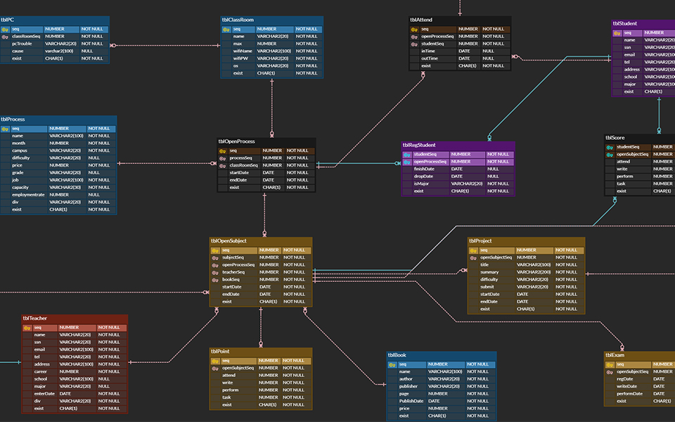
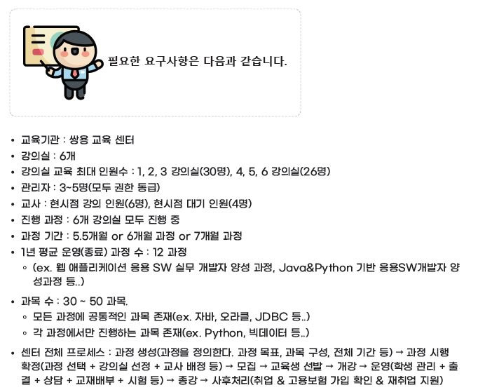
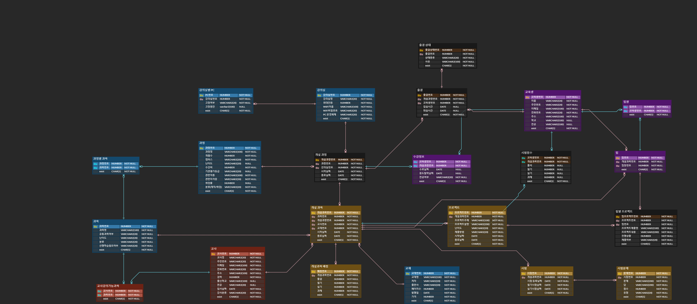
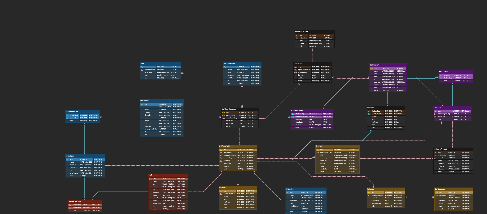
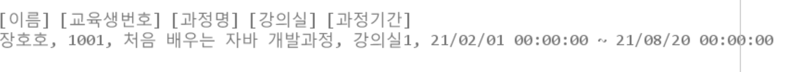

교육센터 운영 데이터베이스 프로젝트
- 카테고리: Data Base(Oracle)
- 진행 날짜: 2021. 06. 05
교육센터 운영 데이터베이스 프로젝트
- 개발 기간 : 2021. 06. 01 ~ 2021. 06. 05 (5일간)
- 개발 환경 : Oracle
- 사용 기술 : SQL, Trigger, 함수, View, Index, SubQuery, Join
- 개발 인원 : 5명
- 주제 : 교육센터 운영 데이터베이스 도와주는 웹사이트
- 개요 : 쌍용 교육센터를 운영하면서 필요한 모든 사용자의 데이터베이스를 구축하시오.
- 요구사항: 
- 기능:
- 관리자 기능
- 기초 정보 관리, 교사 계정 관리, 개설 과정 관리, 개설 과목 관리, 교육생 관리, 성적조회 - 교사 기능
- 강의스케줄 조회, 배점 입출력, 성적 입출력 기능 - 교육생 기능
- 출결관리 및 출결 조회 성적 조회 기능
- 관리자 기능
- 담당기능: 교육생 모든 기능(성적 조회, 출결 등록, 조회, 프로젝트 입력 진행상황 입력, 조회 등)
- ERD(논리 데이터베이스) 
- ERD(물리 데이터베이스) 
- 기능소개
교육생 수강정보1. 교육생 수강 정보;Course Information
create or replace view vw_C_001 as select s.seq as seq, s.name as name, r.studentseq as studentseq, p.name as processname, '강의실' || o.classroomseq as classroom, o.startdate || ' ~ ' || o.enddate as processdate from tblProcess p inner join tblopenprocess o on p.seq = o.processseq inner join tblregstudent r on o.seq = r.openprocessseq inner join tblstudent s on r.studentseq = s.seq where --s.seq = 1001 and s.exist = 'Y' and r.exist = 'Y' and o.exist = 'Y' and p.exist = 'Y'; --프로시저 create or replace procedure proc_C_001 ( pseq number, -- 과목 번호 pcursor out sys_refcursor --커서 ) is begin open pcursor for select * from vw_C_001 where seq = pseq; end proc_C_001; --호출 declare vcursor sys_refcursor; vrow vw_C_001%rowtype; begin proc_C_001(1001, vcursor); --특정교육생 dbms_output.put_line('[이름]' || ' [교육생번호]' || ' [과정명]' || ' [강의실]' || ' [과정기간]'); loop fetch vcursor into vrow; exit when vcursor%notfound; dbms_output.put_line(vrow.name || ', ' || vrow.studentseq || ', ' || vrow.processname || ', ' || vrow.classroom || ', ' || vrow.processdate ); end loop; end;출력결과

교육생 과목별 성적정보; Grades by subject-- 프로시저 create or replace procedure proc_C_002 ( pstudentseq number -- 교육생 번호 ) is cursor vcursor is select o.seq as SubjeectNum, s.name as name, t.name as Tname, j.name as Subname, o.startdate ||' ~ '||o.enddate as processdate, b.name as book, c.attend as att, c.write as wri, c.perform as per, c.task as tas, ( select fnavgscore(c.attend, p.attend,c.write, p.write, c.perform, p.perform, c.task, p.task) from tblScore where studentseq = pstudentseq and opensubjectseq = 1 ) as avgg from tblStudent s left outer join tblScore c on s.seq = c.studentseq left outer join tblOpenSubject o on c.opensubjectseq = o.seq left outer join tblSubject j on o.subjectseq = j.seq left outer join tblBook b on o.bookseq = b.seq left outer join tblteacher t on o.teacherseq = t.seq left outer join tblPoint p on o.seq = p.opensubjectseq where s.seq = pstudentseq and o.exist = 'Y' and s.exist = 'Y' and c.exist = 'Y' and j.exist = 'Y' and b.exist = 'Y' and t.exist = 'Y' and p.exist = 'Y' order by o.seq asc ; vrow vcursor%rowtype; begin for vrow in vcursor loop dbms_output.put_line(vrow.SubjeectNum || ', ' || vrow.name || ', ' || vrow.Tname || ', ' || vrow.Subname || ', ' || vrow.processdate || ', ' || vrow.book || ', ' || vrow.att || ', ' || vrow.wri || ', ' || vrow.per || ', ' || vrow.tas || ', ' || vrow.avgg); end loop; end proc_C_002; --호출 call proc_C_002(1001); --특정교육생 번호출력결과
교육생 번호를 입력하면 위와같이 자신이 수강하는 과목에 대한 정보를 확인 가능하다.
출결입력; Attendance input--프로시저 (출결입력) create or replace procedure proc_Attend_insert( pseq tblAttend.seq%type, popenprocessseq tblAttend.openprocessseq%type, pstudentseq tblAttend.studentseq%type, pintime tblAttend.intime%type, pouttime tblAttend.outtime%type, pexist tblAttend.exist%type ) is begin insert into tblAttend (seq, openprocessseq, studentseq, intime, outtime, exist) values (pseq, popenprocessseq, pstudentseq, pintime, pouttime, pexist); commit; dbms_output.put_line('출결 성공'); exception when others then rollback; dbms_output.put_line('출결 실패'); end proc_Attend_insert; --호출 call proc_Attend_insert(attendSeq.nextVal, 1, 1001, to_date('2021-02-13 08:35', 'yyyy-mm-dd hh24:mi'), to_date('2021-02-13 00:00', 'yyyy-mm-dd hh24:mi'), 'Y'); -- 출결 확인 뷰 select * from vw_C_003; --프로시저 (퇴실체크) create or replace procedure proc_Attend_update( pnum in tblAttend.seq%type, -- 출결 Seq psel in varchar2, -- outtime선택 pintime in varchar2 -- 퇴실 시간 ) is begin -- outtime에 퇴실 시간을 넣어줌 if psel = 'outtime' then update tblAttend set outTime = pintime where seq = pnum; commit; end if; dbms_output.put_line('퇴실체크 완료'); exception when others then rollback; dbms_output.put_line('퇴실체크 실패'); end proc_Attend_update; --프로시저 호출 call proc_Attend_update(845,'outTime', to_date('18:00', 'hh24:mi')); -- 퇴실 확인 뷰 select * from vw_C_003; -- 1001번 교육생 출결 상태 뷰 생성 create view vw_C_003 as select * from tblAttend where studentseq = 1001; --프로시저(외출시 사유 입력) create or replace procedure proc_Attendstate_insert( pseq tblAttendState.seq%type, pattendSeq tblAttendState.attendSeq%type, pstate tblAttendState.state%type, pcause tblAttendState.cause%type, pexist tblAttendState.exist%type ) is begin insert into tblAttendState (seq, attendSeq, state, cause, exist) values (pseq, pattendSeq, pstate, pcause, pexist); commit; dbms_output.put_line('등록 성공'); exception when others then rollback; dbms_output.put_line('등록 실패'); end proc_Attendstate_insert; --호출 call proc_Attendstate_insert(stateSeq.nextVal,31,'외출','은행업무','Y'); select * from tblAttendstate; -- 확인 select * from tblAttend where studentseq = 1001;전체 교육생 출결테이블과, 외출이나 병가 사유가 있는 교육생 테이블을 따로 나누어 각각 입력 받도록 하였다.
트리거 생성; Triggercreate or replace trigger trg_LogTeamProject after update or delete on tblTeamProject declare vmessage varchar2(1000); begin -- 로그 내용 if updating then vmessage := '프로젝트 진행상황이 변경되었습니다.'; end if; insert into tblLogTeamProject(seq, message, regdate) values (seqLogTeamProject.nextVal, vmessage, default); end trg_LogTeamProject;프로젝트 진행상황이 변경될때마다 trg_LogTeamProject에 변경 내용이 기록된다.
- 🙋♀️프로젝트를 진행하며 배운점:
한 교육 기관의 모든 사용자의 기능들과 어떤 프로세스로 업무가 진행되야 하는지빠삭하게
이해해야 했기 때문에 막상 SQL을 작성하는 시간보다도 요구사항분석을 하는 시간이 더 오래걸렸던것 같다.
하지만 팀원들과 매우 많은 대화를 거쳐서 결국에는 한 프로젝트를 완성할 수 있었다!
Join과 서브쿼리, 프로시저 생성은 이제 더 이상 두렵지 않다 !
팀원들 모두 열정적으로 임했던 프로젝트였다.